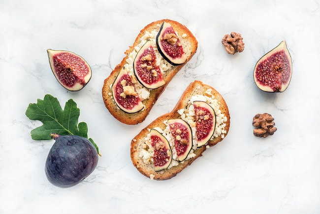

Fig Toast

Delicious Whipped Feta Cheese Fig Toast
Ingredients:
- 2 slices sourdough
- 3 tbsp ricotta cheese
- 2 fresh figs
- flake sea salt
Steps:
- Toast your sourdough bread until it is slightly crispy and browned on edges, or to your desired doneness.
- Spread about 1 1/2 Tablespoons of fresh ricotta on each slice of toast.
- Place quartered figs on top of ricotta.
- Drizzle toast with some of your favorite honey.
- Sprinkle with salt.